Práctica 5: Series de Fourier en tiempo continuo
Integrantes:
- Arellano Paz Angel Ulises
- Cardoso Arias Javier
- Gachuz Hernández Karla Denisse
- García Arteaga Alejandro
- López Galván José Rodolfo Objetivos
- Realizar gráficas de series de Fourier exponenciales y trigonométricas en tiempo continuo
- Manipulación de instrucciones en MATLAB Ejercicio del PR10 Sea una señal $f\left(t\right)\;$de periodo 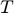, su descripción en el intervalo 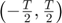 es:
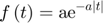
Su Serie de Fourier en dicho intervalo es:
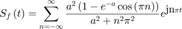
a) Determine el valor de
b) ¿Cúal es el valor promedio de 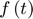? (realice dos procedimientos). El valor promedio de una sẽnal periódica se define como:
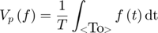
c) La componente de$f\left(t\right)$ en cierta frecuencia se puede ecpresar como 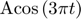. Determine el valor de 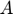.
d) Calcule la Serie de Fourier para la señal con el dato encontrado en a) y verifique que coincida con la proporcionada
Solución:
Ya que es el perido de $f\left(t\right)$haremos la igualdad 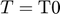 esto con la finalidad de poder respetar la nomenclatura de la Serie de Fourier
a)
De la $S_f \left(t\right)\;$que nos fue proporcionada podemos notar que 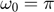 ya que:
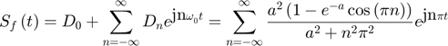
Analizando las exponenciales

W0=pi; T0=2*pi/W0; T0
T0 =
2
b) Declaramos las variables simbolicas a utilizar y escribimos la integral
syms a t T0 f=a*exp(-a*abs(t)) Vp=simplify(((1/T0)*int(f,-T0/2,T0/2)))
f = a*exp(-a*abs(t)) Vp = -(2*exp(-(T0*a)/2) - 2)/T0
Intentamos simplificar pero el software no da para más
Si ocupamos $T=2\;$que fue obtenido en el inciso anterior, el valor promedio de es:
Vp=subs(Vp,T0,2)
Vp = 1 - exp(-a)
c) Notemos que tiene la forma 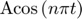 con 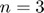, dicha forma cumple con la forma Trigonometrica Compacta, por ende
seria el tercer armonico y seria el tercer coeficiente, al cual llamaremos 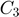
syms a n assume(n,'real') assume(a,'real') Dn=(((a^2)*(1-exp(-a)*cos(pi*n)))/((a^2)+(pi*n)^2)); C3=2*abs(subs(Dn,n,3))
C3 = (2*a^2*(exp(-a) + 1))/(a^2 + 9*pi^2)
Si buscamos obtener 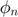 usamos 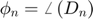
phi3=angle(subs(Dn,n,3))
phi3 = 0
d) Usaremos 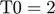.
syms n t a assume(n,{'integer'}) assume(a,'real') T0=2; W0=pi; Dn=simplify((1/T0)*int(f*exp(-n*W0*j*t),-T0/2,T0/2))
Dn = (a^2*exp(-a)*(exp(a) - (-1)^n))/(a^2 + n^2*pi^2)
La expresión obtenida para los 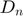 es una expresión equivalente a la proporcionada
Para poder graficar haremos 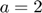
Dn=subs(Dn,a,2)
Dn = (4*exp(-2)*(exp(2) - (-1)^n))/(n^2*pi^2 + 4)
Con lo que la Serie de Fourier exponenial compleja queda de la siguiente forma
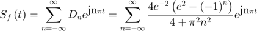
Para obtener la Trigonometrica Compacta.
Cn=2*abs(simplify((Dn))); Cn=simplify(Cn) Phi_n=angle(Dn) C0=abs(subs(Dn,n,0)) Phi_0=angle(subs(Dn,n,0))
Cn = (8*abs((-1)^n - exp(2))*exp(-2))/(n^2*pi^2 + 4) Phi_n = piecewise((exp(2) - (-1)^n)/(n^2*pi^2 + 4) < 0, pi, 0 <= (exp(2) - (-1)^n)/(n^2*pi^2 + 4), 0) C0 = exp(-2)*(exp(2) - 1) Phi_0 = 0
Utilizando los 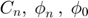 y 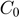 calculados ya podemos expresar la serie de Fourier en su forma Trigonometrica Compacta
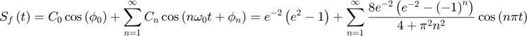
Existe algo llamado Error que se define de la siguiente manera
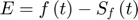
El cual tambien sera graficado
Exponencial Compleja
T0=2; W0=2*pi/T0; a=2; m=15; f=@(t) a*exp(-a*abs(t)); Dn=@(n) ((4*exp(-2)*(exp(2)-(-1)^n))/(4+(n*pi)^2)); D0=exp(-2)*(exp(2)-1); t= (2.5)*(-T0):0.001:(2.5)*(T0); Sfc=D0; for n=1:m Sfc=Sfc+Dn(-n)*exp(W0*-n*t*j)+Dn(n)*exp(W0*n*t*j); end figure (1); hFig = figure(1); set(hFig, 'Position', [0 0 900 900]) subplot(3,2,1) plot(t,Sfc,'LineWidth',2) grid on legend('S. Fourier Exp. Compleja','Location','southeast') xlabel('t','FontWeight','bold','FontSize',16) axis([-5 5 -0.5 2.5]) Sfc=D0; t=(-T0/2):0.0001:(T0/2); for n=1:m Sfc=Sfc+Dn(-n)*exp(W0*-n*t*j)+Dn(n)*exp(W0*n*t*j); end subplot(3,2,2) plot(t,f(t),'r','LineWidth',0.75) grid on hold on plot(t,Sfc,'b','LineWidth',1.5) legend('Función original','Serie de Fourier ','Location','Best') xlabel('t','FontWeight','bold','FontSize',16) axis auto subplot(3,2,4) Ec=f(t)-Sfc; plot(t,Ec,'LineWidth',2) title('Error','FontWeight','bold','FontSize',16) xlabel('t','FontWeight','bold','FontSize',16) axis auto grid on subplot(3,2,6) area(t,Ec.^2) legend('Energia del error','Location','Best') xlabel('t','FontWeight','bold','FontSize',16) axis auto grid on nn=-m:m; absdn=zeros(1,length(nn)); cont=1; for i =-m:m if i==0 absdn(cont)=D0; end absdn(cont)=Dn(i); cont=cont+1; end subplot(3,2,3) stem(W0*nn,abs(absdn),'LineWidth',2) title('Espectro de magnitud D_n ','FontWeight','bold','FontSize',16) xlabel('\omega','FontWeight','bold','FontSize',16) grid on subplot(3,2,5) % % stem(W0*nn,angle(absdn),'LineWidth',2) % % title('Espectro de fase, \angle de D_n ','FontWeight','bold','FontSize',16) % % xlabel('\omega','FontWeight','bold','FontSize',16) grid on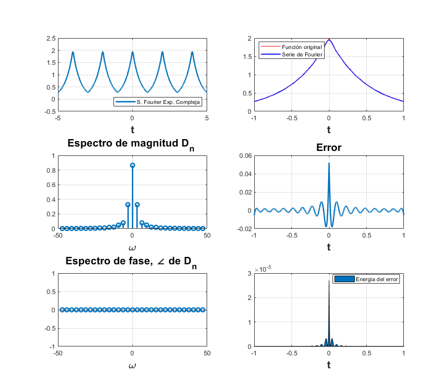
Trigonometrica compacta
T0=2; W0=2*pi/T0; a=2; m=15; f=@(t) a*exp(-a*abs(t)); Cn=@(n) ((8*exp(-2)*(exp(2)-(-1)^n))/(4+(n*pi)^2)); C0=exp(-2)*(exp(2)-1); t= (2.5)*(-T0):0.001:(2.5)*(T0); phin=0; phi0=0; Sft=C0*cos(phi0); for n=1:m Sft=Sft+Cn(n)*cos(n*pi*t+phin); end figure (2); hFigg = figure(2); set(hFigg, 'Position', [0 0 900 900]) subplot(3,2,1) plot(t,Sft,'LineWidth',2) grid on legend('S. Fourier Trigo. Compacta','Location','southeast') xlabel('t','FontWeight','bold','FontSize',16) axis([-5 5 -0.5 2.5]) Sft=D0; t=(-T0/2):0.0001:(T0/2); for n=1:m Sft=Sft+Cn(n)*cos(n*pi*t+phin); end subplot(3,2,2) plot(t,f(t),'r','LineWidth',0.75) grid on hold on plot(t,Sft,'b','LineWidth',1.5) legend('Función original','Serie de Fourier ','Location','Best') xlabel('t','FontWeight','bold','FontSize',16) axis auto subplot(3,2,4) Et=f(t)-Sft; plot(t,Et,'LineWidth',2) title('Error','FontWeight','bold','FontSize',16) xlabel('t','FontWeight','bold','FontSize',16) axis auto grid on subplot(3,2,6) area(t,Et.^2) legend('Energia del error','Location','Best') xlabel('t','FontWeight','bold','FontSize',16) axis auto grid on nn=0:m; abscn=zeros(1,length(nn)); cont=1; for i =0:m if i==0 abscn(cont)=C0; end abscn(cont)=Cn(i); cont=cont+1; end nn=0:m; absdnn=zeros(1,length(nn)); cont=1; for i =0:m if i==0 absdnn(cont)=D0; end absdnn(cont)=Dn(i); cont=cont+1; end subplot(3,2,3) stem(W0*nn,abs(abscn),'LineWidth',2) title('Espectro de magnitud C_n ','FontWeight','bold','FontSize',16) xlabel('\omega','FontWeight','bold','FontSize',16) grid on subplot(3,2,5) % % stem(W0*nn,angle(absdnn),'LineWidth',2) % % title('Espectro de fase \phi_n ','FontWeight','bold','FontSize',16) % % xlabel('\omega','FontWeight','bold','FontSize',16) grid on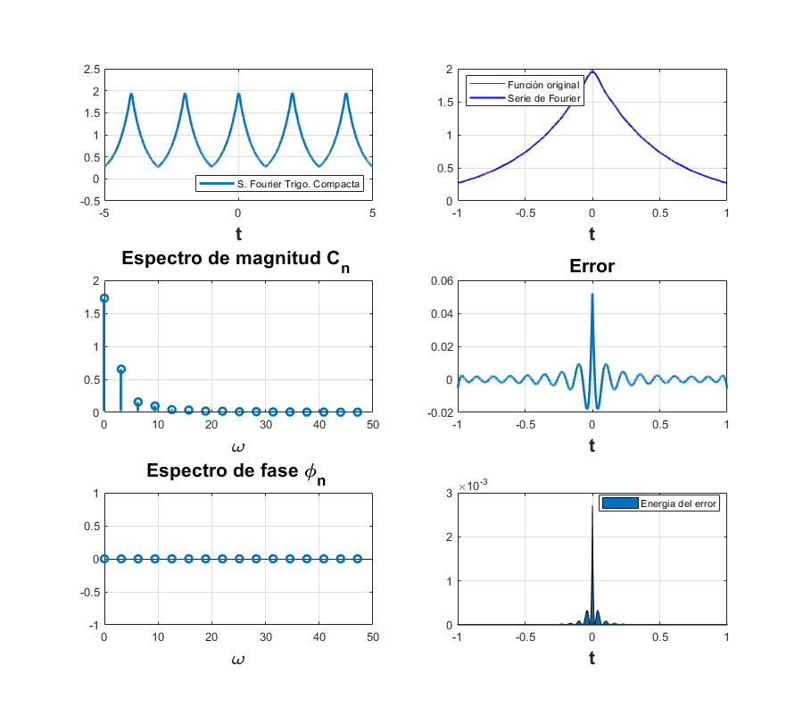